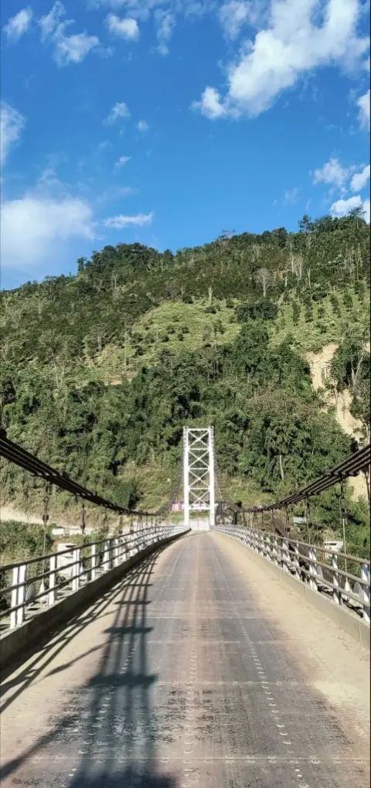
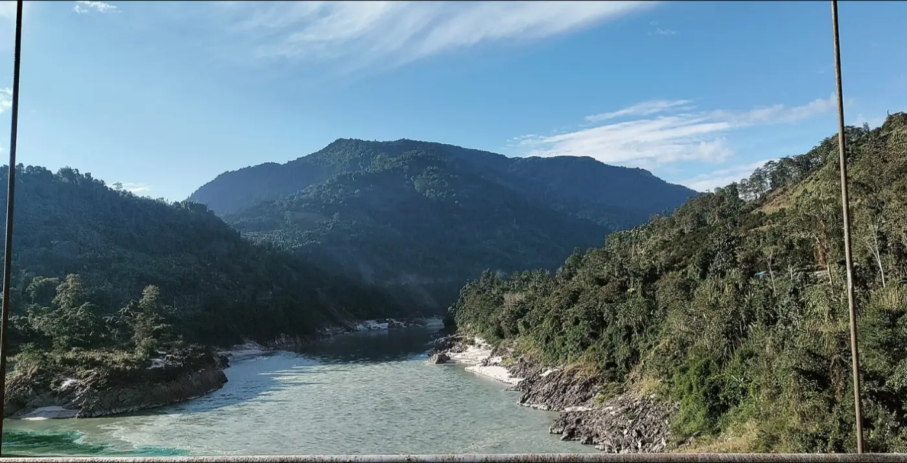
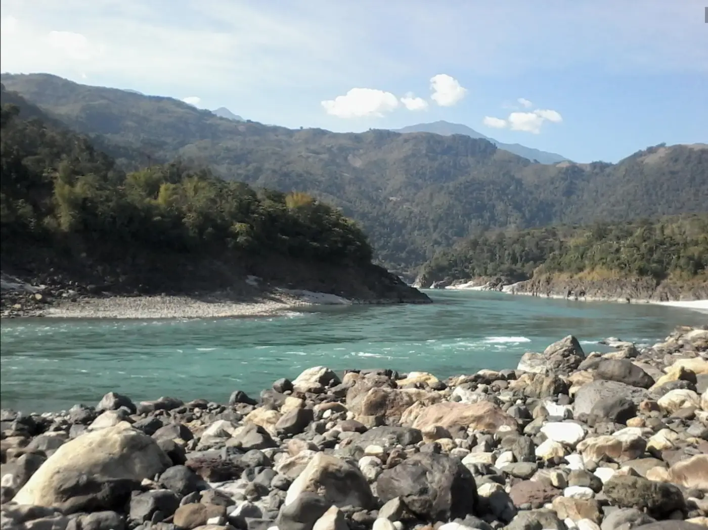

The fight over the Siang dam
A 36-hour shutdown began on 2 Nov demanding detainees' release; internet was cut in four Upper Siang areas. CM Pema Khandu said "we are not talking about dam construction at this stage".
Adi villages along the Siang oppose an 11,000 MW dam that would submerge 27 villages; protests turned to arson in Pasighat on 23 October.
Mongabay India · Arunachal TimesPolice say 69 people have been arrested under the state's anti-terror law, and four villagers have been held since 9 October.
Scroll · Arunachal TimesA 36-hour shutdown demands detainees' release; the chief minister says no dam decision will come without people's consent.
Arunachal Times · Hub Network File photo · 2019
File photo · 2019i

The background

File photo · 2023i

The 11,000 MW dam, built by NHPC, would submerge 27 villages, Mongabay India reports, and residents have long opposed it.
More detail and sources
The Siang Upper Multipurpose Project is an 11,000 MW hydropower plant being developed by NHPC. Mongabay India reports it would submerge 27 villages, including Yingkiong, Upper Siang's district headquarters, and residents of Siang, Upper Siang and East Siang districts have consistently opposed it. Mongabay India

File photo · 2023i

Today's protests target the pre-feasibility study, one of the last steps before the dam's detailed project report.
More detail and sources
The current protests oppose a pre-feasibility study by NHPC at the proposed dam sites, one of the last studies before the dam's detailed project report. Early this month protests turned violent: protesters set fire to vehicles and stormed an MLA's house, and police allegedly lathi-charged protesters on 4 October. Mongabay India
Timeline
Newest first. Every update links to its sources.
- Latest
In a statement to the Adi community, Chief Minister Pema Khandu said: "We are not talking about dam construction at this stage." He said neither the Union nor the state government had decided to build the project, that the pre-feasibility report "is not a final approval", and that decisions would come "only through open discussion and with your consent". The report did not mention the detained. Hub Network
Show 12 earlier updates ↓
On 2 November the Siang Indigenous Farmers Forum and the SUMP Affected Area Youth Association began a 36-hour shutdown across three districts, demanding the release of people detained over the agitation and a halt to pre-feasibility work on the Siang. Shops and petrol pumps in Yingkiong stayed shut, and internet services were suspended in Yingkiong, Simong, Komkar and Geku "to curb the spread of misinformation through social media"; no bandh-related incidents were reported in the district. Forum president Nobeng Burang said the agitation would end if the government released the detained. Arunachal Times
On 31 October Delhi Police detained protesters, including activist Katon Moyong (known as Abor Man), at a solidarity protest outside Arunachal Bhawan in New Delhi that demanded the project's withdrawal, the release of detainees and the removal of central forces. Organisers Himkhand said about 40 were detained and alleged that some were sexually assaulted while being put into buses; some were later released. No Delhi Police response to the allegations was reported. The same day the Arunachal Indigenous Tribes Forum formed a seven-member peace committee to facilitate dialogue among all stakeholders. Arunachal Times · Maktoob Media · Arunachal Times
On 30 October a group of citizens protested outside Nehru Park in Guwahati, Assam, against the Upper Siang project and the proposed Lower Siang project, demanding the unconditional release of arrested Adi leaders and protesters. Journalist Maini Mahanta, who spoke, condemned the arrests of protesters and journalists; a protester claimed about 26,000 trees had been felled for the project. No official response to the Guwahati protest was reported. Assam Tribune
On 29 October The Federal reported Hibu Tamang's count as 53 cases (26 in Upper Siang, 21 in Siang and 6 in East Siang) and 69 arrests, with notices under the BNSS served on more than 200 people. The Siang Indigenous Farmers' Forum said it will not meet Chief Minister Pema Khandu until those jailed are released and army and paramilitary forces leave Siang and Upper Siang. The same day, protesters in traditional dress marched against the dam, demanding the release of those in custody and the withdrawal of cases. The Federal · Bombay Samachar
On 27 October the inspector-general of police for the central range, Hibu Tamang, said 69 people had been arrested and four detained under the Arunachal Pradesh Unlawful Activities (Prevention) Act over the 23 October violence, with 55 cases registered across Upper Siang, Siang and East Siang. They face charges of rioting, burning vehicles and damaging property; Ebo Mili and Otul Jerang say they took no part in the arson. On 28 October rural development minister Ojing Tasing said he had met representatives of 72 villages in East Siang, and that the concerns and rights of local communities must remain central to decisions on the project. Scroll · DY365 · NE Now
On 27 October ThePrint reported that 30 companies of central armed police are deployed across East Siang, Siang and Upper Siang, and the district magistrate said the Section 163 curbs on gatherings in Pasighat, Mebo and Ruksin will stay "until further orders". Ebo Mili's family said his health, with hypertension and diabetes, is deteriorating in custody and asked for proper medical care; he and Otul Jerang have distanced themselves from the arson. ThePrint · Arunachal Times
On 26 October East Siang police said 26 people, five of them juveniles, had been arrested over the 23 October violence in Pasighat, and six more detained for questioning; eight cases are registered under the BNS and the public property damage law. The same day, activists Ebo Mili and Otul Jerang, in police custody since surrendering, reportedly began a hunger strike. India Today NE · Northeast News · India Today NE
On 25 October prohibitory orders under Section 163 of the BNSS stayed in force in parts of East Siang, and officials reported no fresh violence. Chief Minister Pema Khandu met the Arunachal Indigenous Tribes Forum and other community organisations, and convened MLAs from all parties to discuss the pre-feasibility report and survey. Protest groups' demands include scrapping the project, withdrawing armed forces, releasing 10 arrested activists and reinstating suspended village chiefs. New Indian Express
On 24 October shops in Pasighat stayed shut. Police detained five youths for questioning over the vandalism of homes, and from 5pm gatherings of more than five people were barred in Pasighat, Mebo and Ruksin. Arunachal Times reports five police personnel and several protesters were injured in the clashes. Activists and lawyers, among them human rights lawyer Ebo Mili, surrendered to police, saying the bandh had been peaceful and young people were not behind the violence. Arunachal Times · Maktoob Media
On 23 October a 12-hour bandh was called across Siang, Upper Siang and East Siang. At Dite-Dime near Geku, police fired tear gas and four to five women were hospitalised; a cameraman was reportedly hit by a shell. That night protesters reportedly set fire to an NHPC office, a police station and police vehicles in Pasighat, and vandalised the homes of local political leaders. The unrest continued until about 4am on 24 October. Protesters want 10 arrested activists freed and an independent inquiry into the police action. NE Now · EastMojo · HubNetwork · NE Now
On 22 October opponents began a 24-hour sit-in at Miracle Ground in Pasighat, demanding an end to survey work, the release of those held and the withdrawal of central armed police. The district allowed it but barred any march beyond the ground. Five more activists were reportedly taken into custody in Pasighat; associates said they did not know where they were held. DY365
On 9 October four villagers of Geku, Adum Tayom, Omak Paron, Okut Paloh and Oson Paron, were detained under the Arunachal Pradesh Unlawful Activities (Prevention) Act, 2014; their lawyer says the families at first received only notices. On 11 October the district banned gatherings of five or more people, and on 14 October a sessions court gave 13 people named in two police cases interim protection from arrest. Arunachal Times · Mongabay India
In pictures

File photo · 2014i

- Detention orders cite violence, arson and public safety; police say protesters at Dite-Dime threw stones and defied prohibitory orders.
- On 27 October the police inspector-general said those arrested face charges of rioting, burning vehicles and damaging property.
- Chief Minister Pema Khandu has offered talks (“The government's doors are always open”) and says the dam is mainly meant to store water in view of China's planned dam upstream.
Show 3 more
- On 28 October minister Ojing Tasing said the project needs people's trust and called for transparency and dialogue.
- On 29 October the state government said current work is only surveys for a feasibility report; on 2 November the chief minister said: "We are not talking about dam construction at this stage."
- Internet in parts of Upper Siang was suspended on 2 November "to curb the spread of misinformation"; no police comment on the Delhi allegations was reported.
In the daily edition: Tue 03 Nov · Sun 01 Nov · Sat 31 Oct · Fri 30 Oct · Thu 29 Oct · Wed 28 Oct · Tue 27 Oct · Mon 26 Oct · Sun 25 Oct · Sat 24 Oct · Fri 23 Oct · Mon 19 Oct · Sun 18 Oct · Sat 17 Oct